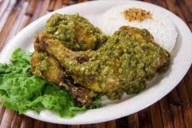

Resep Ayam Cabe Ijo

Bahan
- 1 Kg ayam
- minyak goreng secukupnya
- 4 helai daun salam
- 1 batang serai
- 4 helai daun cengkeh
- 4 helai daun kayu manis
- 3 helai daun jeruk
- 4 siung bawang putih
- 7 siung bawang merah
- garam secukupnya
- 1/4 sdt kaldu bubuk
- 20 cabai rawit hijau
Langkah
- Haluskan bumbu bawang putih, ketumbar dan garam.
-
Cuci bersih ayam. Ungkep ayam dengan bumbu halus selama 30 menit
atau hingga empuk.
- Angkat ayam dan goreng hingga matang.
-
Ulek halus sambal cabe hijau, tumis sebentar lalu masukkan daun
jeruk, tumis hingga matang sambalnya. Masukkan kaldu bubuk, garam
dan gula secukupnya. Masukkan ayam ke dalam sambal. Tes rasa, jika
sudah pas, angkat.